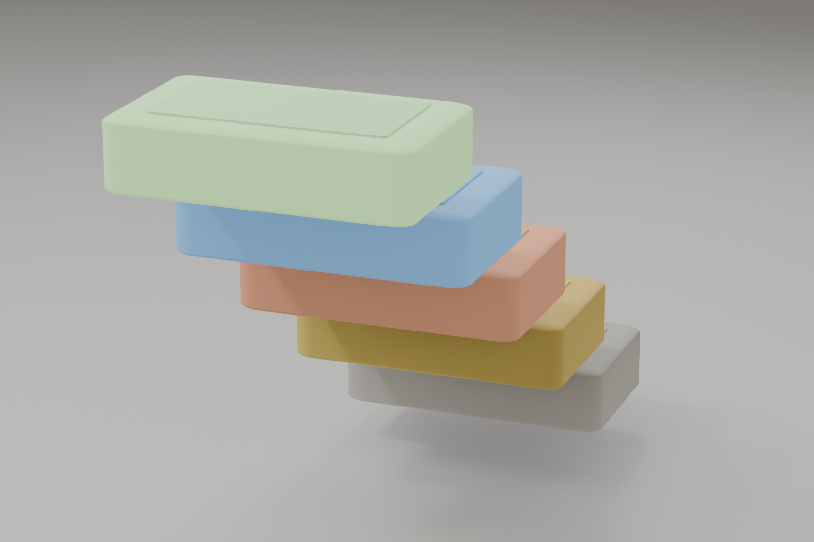
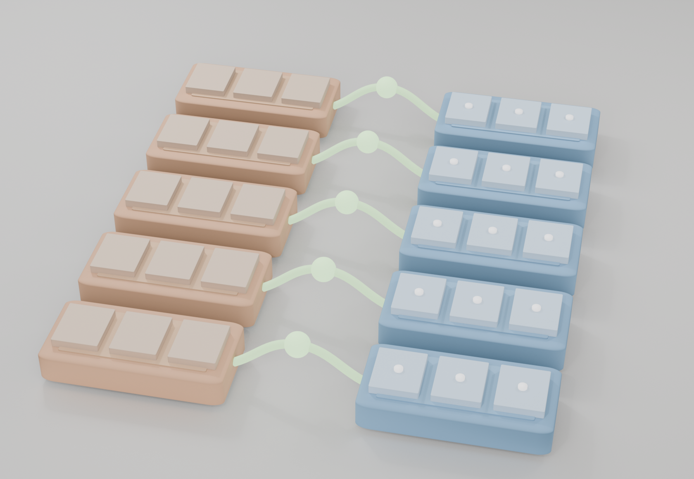

Every invariant below exists because of a specific class of failure. The table makes the threat model explicit: what the adversary tries · what invariant is at risk · which layer catches it. The point isn't that the substrate is unbreakable — it's that each defense lives at the layer where the attack can be enumerated, not in agent prompts that can be talked around.
| Adversary capability | Invariant at risk | Layer that catches it | Observed via (§7) |
|---|---|---|---|
| Prompt-injected request to bypass a safety property | Safety is enforced at the substrate, not as agent-prompt text. The agent layer cannot revoke it because the agent layer doesn't own it. | L7 · Constitution + TierGuard · csis/safety/ |
Tripwire fires · event-log integrity |
| Builder model argues it should self-verify ("just check your own work") | Verifier checkpoint must differ from builder checkpoint by ≥2 identity components. | L4 · Auditor refuses cert if cert.builder == cert.verifier · cycle-1 F1 |
Cross-checkpoint refusal count |
| Same-model collusion: builder + verifier share blind spots in build | Different model_id means different training, different priors, different blind spots. |
L4 · assert_cross_checkpoint() at cert build site |
Cross-checkpoint refusal count |
| Race: sibling iteration mutates store between sign and promote | Promotion is atomic vs. exact store state at sign time. | L3 · hash-CAS store.promote(hash_precondition=...) |
Hash-CAS failure rate |
| Bad write becomes truth on next read; poisoning compounds | Candidate writes never appear in live reads; only path is signed promotion. | L3 · candidate/live split · writer_iteration_id stamp (H4) |
Distributional cert per-slice CI · regression tests |
| Dreamed-up "improvement" auto-promotes without a verifier | Sleep/Dreams runs offline; output is candidates, not commits. | L5 · Dreams pipeline · no tool access, no agent prompts | Cross-checkpoint refusal · cert per-slice |
| Trust-level claim ("I verified") gets read as authorization | Trust is an integer ladder. Only path up is through an explicit gate. | L2 · TrustLevel IntEnum + upgrade-gate checks |
Event log (upgrade-gate entries) |
Subclass attack: expose _wrapped backend to extract underlying client |
Every LLM call routes through one wrap site (finite chokepoint, not perimeter). | L0/L1 · Coordinator.__init__ refuses any backend that isn't _BackendTracker (cycle-9 H1) |
Regression tests (H1 test) |
| Forensic replay claims wrong sequence of events | Hash-chained event log; any reorder/insertion breaks the chain. | L0 · EventLog.verify_chain() + per-event salt |
Event-log integrity check |
| V1 graders silently drift mid-task (test mutation, threshold relaxation) | Graders are source-hashed at task start; mid-task drift rejected. | L4 · pinned grader_source_hash in cert |
Regression tests · cert grader-hash audit |
The invariants below aren't decorative — each one is the answer to a specific row in the table above. Without the threat model, a reader has to reverse-engineer the design from inference. With it, every later diagram becomes "oh, this is how we catch row N."
The list isn't exhaustive (no list of attacks ever is). It's the set of attack classes that fell out of 10 cycles of red-team → fix → regression-test. New rows get added when a critique cycle finds something not on the list.
Listing what we catch is not the same as listing what we'd miss. Two known classes the substrate does not defend against in Phase 0: closure-cell mutation by privileged code in the same Python process (H2), and POSIX unlink-during-lock by another OS user (H11). Both are deferred to Phase 1 (process-level isolation).
Honesty about the perimeter matters more than the size of the perimeter. Anything on the deferred list is in CYCLES.md with its rationale.
Click any layer to see what's inside it. The stack is intentionally shallow — every layer above relies on substrate-level guarantees below without re-implementing them. That's how safety properties stay load-bearing instead of negotiated case-by-case in agent prompts.
The scene renders the 8-layer CSIS stack as 8 stacked rectangular slabs in 3D space, each labeled with its layer ID and owning role. From the bottom up:
EventLog (hash-chained), CapabilityTag, canonical_json_hash, TierGuard. The only layer everyone trusts unconditionally.Coordinator drives the 8-step loop; delegates to Researcher, Builder, Verifier, Critic, Librarian, Auditor; delegation depth = 1.MemoryStore per tier (candidate ↔ live), MemoryHierarchy wraps 5 tiers, TrustLevel IntEnum, writer_iteration_id stamp.store.promote(); atomic candidate→live flip; PromotionPreconditionFailure on stale hash.assert_cross_checkpoint() at cert build site.Interaction: the scene auto-rotates slowly when idle. Drag with the mouse to orbit around the stack. Scroll to zoom. Click any slab to open the same detail panel as the 2D diagram below — including the layer's components and code path.
Most agent frameworks grow horizontally — more tools, more skills, more prompts. CSIS grows vertically: every safety property becomes a substrate guarantee that higher layers depend on without re-implementing.
A subclass attack on _BackendTracker isn't fought at L4 ("agent prompt should not bypass metering"). It's fought at L0/L1 ("Coordinator refuses any backend that isn't exactly _BackendTracker"). The layers above never have to think about it.
Each layer owns exactly one structural commitment. L2 owns reversibility. L4 owns cross-checkpoint verification. L7 owns capability ceilings. Two layers enforcing the same property means the property is at the wrong abstraction level.
Cycle 9 found three places enforcing the wrapped-backend invariant. The fix was to put it in exactly one place (Coordinator.__init__) and let everything above benefit. That's pattern 2 from the cycle log.
Memory entries carry their trust level explicitly. The lattice is strictly ordered: downgrades always allowed; upgrades require crossing the right gate. This is what turns "why-tags" from prose into something the Auditor can enforce.

entry.trust ≥ VERIFIED is one integer comparewrite → Verifier check → cross-checkpoint cert → hash-CAS). The 6th state, deprecated, is terminal and always reachable as a downgrade from any non-raw level. The IntEnum ordering makes entry.trust ≥ TrustLevel.VERIFIED a single integer compare — no string parsing, no enum-lookup tax.| level | who can read | citable as ground truth? | upgrade gate |
|---|---|---|---|
raw | coordinator only | — | storage write |
untrusted | coordinator + researcher | — | basic Verifier check |
candidate | verifier + critic + auditor + librarian + coordinator | — | cert signed |
verified | all roles | yes | why-doc + hash CAS |
promoted | all roles | yes | — |
deprecated | auditor only | — | terminal · no path out |
The live side is never written to in place. Writes go to candidate; promotion is the only path to live. This is what makes memory mutation reversible — and what lets the cycle-9 writer_iteration_id stamp work as a race-free ownership tag.

writer_iteration_id → race-free cleanuppromote() — the only path from candidate to live. The cycle-9 writer_iteration_id stamp lives on every candidate entry, so cleanup is race-free under any concurrency model. procedural is starred: it is the tier where self-improvement actually accumulates.Working memory is per-iteration scratch. Episodic is per-iteration narrative. Semantic is durable facts. Procedural is reusable skills (this is where self-improvement actually accumulates). Causal is why-this-fixed-that hypotheses the auditor leans on.
Each tier has its own retrieval pattern. Conflating them into one store would force the auditor to discriminate at read time on every lookup — a hot-path cost the substrate avoids by partitioning at write time.
Every memory mutation passes through candidate → CAS → live. If anything moves between Verifier sign and Auditor promote (concurrent iteration, racing siblings), the promotion fails atomically and the candidate is discarded. Nothing partial reaches live.
This is what makes cycle 9's writer-id tagging work cleanly. The cleanup discards stamp-matched candidates without touching anything live or anything stamped by a sibling iteration.
The Verifier and Auditor MUST run on a checkpoint with a different model_id than the Builder. The same model that produced the artifact cannot rubber-stamp it. This is the single cycle-1 finding (F1) that the entire substrate was designed to make impossible to violate.
builder_checkpoint matches its verifier_checkpoint. The substrate makes this impossible to violate accidentally.F1: the entire substrate exists to make this impossible. Different model_id means at minimum a different snapshot of the world; not perfect, but structurally distinct enough that one model's confident wrong answer doesn't survive a second model's check.If the same model that wrote the artifact is also the one checking it, you have one model with two hats — and a structural class of failure where the model's blind spots in build are exactly its blind spots in verify.
Different model_id means different training, different blind spots, different priors. Imperfect but structurally distinct. The substrate enforces this at the cert build site, not as an agent-prompt request.
V1 graders are pinned (source-hashed at task start; rejected if they drift mid-task) and run programmatically — tests pass, lint clean, Dice ≥ 0.85 with CI lower bound clearing the bar. Reproducible.
V2 is the Critic — explicitly trying to falsify. For distributional outcomes (cycle 10), the Critic attacks the worst slice (lowest-Dice organ, highest-error landmark) rather than the artifact globally. Targeted falsification budget.
The Auditor signs a why-doc whose hash_precondition equals the live store's hash at sign time. store.promote() rechecks the hash before flipping candidate to live. If anything moves between, the promotion fails atomically — nothing partial reaches live, and the iteration rolls back.
writer_iteration_id on candidates makes the rollback race-free.An exclusive lock on the live store would serialize every promote — including ones that don't conflict. CAS lets parallel iterations race; only the loser of a real conflict pays. For mostly-non-conflicting workloads (the common case), CAS is dramatically more throughput-friendly.
And when conflicts do happen, the loser's rollback is clean: the candidate is discarded, the why-doc is invalidated, no partial live state to clean up.
A monotonic version counter can be fooled (revert + reapply = same counter, different content). Hashing the live store's actual content means the precondition encodes what was there, not how many writes have happened.
Canonical JSON serialization (sorted keys, fixed delimiters) means the hash is stable across processes. Two daemons reading the same live state get the same hash with no coordination.
Improvement isn't done during the agent's waking cycles — it'd risk auto-promoting an idea the agent just dreamed up. Instead, Dreams runs offline (different process, no agent prompts, no tool access), reads working+episodic live memory, produces candidate consolidations, and hands them back to the same V1+V2 stack every other candidate goes through. Nothing dreams produces bypasses verification.
Consolidation that happens during a waking iteration would inherit the iteration's tools, network, and the agent's prompt-driven attention. Dreams runs as a separate process with none of these — it sees only the structured event log and the live memory snapshots. No way to call out, no way to execute, no way to be steered by a poisoned prompt.
Partial-output redaction handles the cancel case: if a dream is interrupted, partial outputs are discarded rather than persisted as untrusted candidates.
Dreams could be wrong. Pattern-extraction over episodic memory is a heuristic — it can over-generalize from coincidence. Sending dream output straight to live would create a second mutation primitive bypassing the cycle-1 F2 atomicity guarantee.
Instead, dreams produce candidate entries. They flow into the same V1+V2 stack. They're verified against the same graders, critic, and cross-checkpoint cert. Then the Auditor signs a why-doc with hash precondition. Dreams get no special promotion path.
A guarantee you can't observe might as well not exist. Every invariant in the threat-model table has a corresponding signal — either a counter, a log entry, or a test that fails if the invariant is broken. The dashboard surfaces the live ones; the event log and test suite capture the rest. Nothing here requires trusting an agent's self-report.
| Signal | What it tells you | How to read it | Catches threat (§0) |
|---|---|---|---|
| Cross-checkpoint refusal count | Number of times the Auditor refused to sign because cert.builder_checkpoint == cert.verifier_checkpoint. Should normally be zero in production; non-zero means an operator misconfiguration was caught at the gate. |
live dashboard · event log query · csis/ui/ |
Builder self-verify · same-model collusion · dream auto-promote |
| Hash-CAS failure rate | Percent of promotion attempts rejected because the live store hash changed between cert sign and promote. Non-zero is healthy under concurrency; a sudden spike means contention. | dashboard panel · store.promote() return values |
Race on store between sign and promote |
| Distributional cert per-slice CI bounds | For every signed cert, the worst-performing slice's CI lower bound. Reveals tail failures (rare organs, hard landmarks) the point estimate would hide. | cert payload .distributional_results[].slices · dashboard |
Bad write becomes truth · dream auto-promote (tail failures) |
| Event log integrity | Hash chain verifies end-to-end. Any reorder, insertion, or tampering breaks the chain at the point of corruption. | EventLog.verify_chain() · cron-able |
Forensic replay tampering · trust-level claim audit |
| Regression test count + pass rate | 244 tests gate every commit. A regression means a critique-cycle finding got re-broken; the test that originally caught it now fails. | python -m pytest tests/ -q · CI |
Subclass attack · grader drift · cycle-9 H1+H4 fixes |
| Cycle audit trail | Every finding (99 across 10 cycles), every fix, every regression test. New findings get filed under brain/critiques/; closed ones get a row in CYCLES.md. |
CYCLES.md · brain/critiques/ |
New attack classes not yet in §0 |
| Tripwire fires | Substrate-level tripwires (file I/O outside allowlist, network call from a sandboxed role, etc.) write to the event log and halt the iteration. Zero false-negatives is the target; every false-positive becomes a regression test. | tripwire playground · event log | Prompt-injection attempts to bypass safety |
Every row in the threat-model table maps to at least one row in this table. If we add a defense, we add the signal that proves it's still active. The reverse is also true: a signal that's been zero for months either means the defense works, or that it's no longer hooked up — the dashboard surfaces the difference.
The dashboard reads from on-disk artifacts only — event log, budget JSONs, memory store snapshots, daemon heartbeat. No coupling to the running process, so you can boot it against a stopped state and still inspect the full trail of what happened. Simulated demo here; live one at python -m csis.ui.
After 10 cycles of red-team → fix → regression-test (full trail in CYCLES.md), two structural patterns kept reappearing across four architectural pivots. They generalize past CSIS to most agent-system design.
Cycle 8 detected "which iteration wrote this candidate?" via a pre-consolidate snapshot diff — infer ownership from timing. Cycle 9 found the race window.
The fix wasn't a tighter snapshot. It was a writer_iteration_id field on the candidate itself, stamped atomically at write_candidate time. Ownership belongs on the data, not in the timing.
The same lesson applies in cycle 10: distributional cert evidence (CI bounds, sample size, slice breakdown) belongs on the cert, not inferred at read time from a passed: bool. Bind the truth to the artifact.
Cycles 4-8 added increasingly clever guards to _BackendTracker.__init_subclass__ against _wrapped-exposure attacks. Each cycle the attacker found a different escape (literal name → mangled name → setattr → metaclass).
Cycle 9 stopped guarding the subclass surface (infinite escapes) and started guarding the wrap site — Coordinator.__init__. Every LLM call routes through there; there's exactly one entry point to constrain.
Constrain the finite chokepoint; don't try to perimeter-fence an infinite attack surface.
Everything above is implemented and gated by 244 regression tests. The full cycle trail is at CYCLES.md. The cycle-10 distributional graders are at brain/research/02-distributional-graders.md. The live dashboard renders all of this against a running daemon — simulated demo here, real one at python -m csis.ui.
The original v0.2 spec this implementation derives from: CSIS-architecture.html.